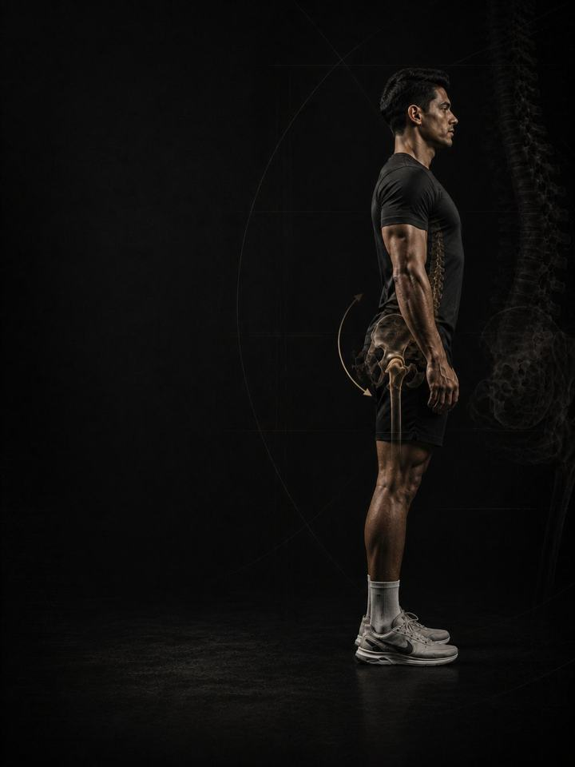

Anterior Pelvic Tilt
Stack the ribs over the pelvis by lengthening the front of the body and building the back.
- Built foranyone with an arched low back that aches through long days of sitting or standing
- Schedulea 10–15 minute daily routine, plus 3 strength days a week
- Equipmentdaily routine needs a mat and a band. Strength days need a full gym.
- Formatmobile PDF, every exercise linked to a demo video
- Add any 12-week program for 54.990 KD in total (64.980 KD if bought separately).
- Upgrade to 1:1 coaching within 30 days and this price comes off your first month.
The store opens soon. For now, Buy opens an Instagram message and you receive the PDF there.
Why an arched back starts to hurt
The pelvis tips forward, the low back arches deeper than it needs to, and the ribs flare up and out. It is the posture people recognise instantly: the arched back and the belly that pushes forward, even on a lean person. It is also the one the internet is most confident about, and most of that confidence is wrong.
A visible arch is not a diagnosis, and no amount of hip flexor stretching fixes it on its own. Some forward tilt is normal, and the range across healthy, pain-free people is far wider than most posture content admits. The question is not how big the arch looks in a photo. It is whether you can flatten it when you choose to, and whether the back is doing a job the hips and core have stopped doing.
What creates symptoms is a combination: a front side that has shortened around a seated day, a back side that has stopped contributing, and a rib cage that has lost its position over the pelvis. This program trains all three, in the order that works.
Your week
A short daily routine, plus three strength days at the gym. Any three days work, as long as they are not back to back. One example:
| Sun | Mon | Tue | Wed | Thu | Fri | Sat |
|---|---|---|---|---|---|---|
| Day 1 + daily routine | Daily routine | Day 2 + daily routine | Daily routine | Day 3 + daily routine | Daily routine | Daily routine |
How it runs:
- Test first. Four tests before week 1, repeated after weeks 3 and 6.
- Daily routine, 10–15 min. Seven movements, every day. On strength days it doubles as the warm-up.
- Strength days. Days 1, 2 and 3, done in order, focused on the posterior chain (glutes, hamstrings, back) and the core.
The five patterns behind most anterior pelvic tilt pain
These five patterns are what turn a normal curve into a sore one. Most people recognise more than one. The program trains all five at once, so you don't need a perfect diagnosis to start.
-
Short, stiff hip flexors. Sit for eight hours and the muscles at the front of the hip spend eight hours short. They attach to the front of the pelvis and the spine, so when they stop lengthening they pull the pelvis into a forward tip and hold it there. In the program: Couch Stretch, 90/90 Hip Flow, Reverse Lunge
-
Quiet glutes and hamstrings. The glutes and hamstrings pull the back of the pelvis down, which is what levels it. When they are quiet, nothing opposes the front, and the hinge that should come from the hip is taken by the low back instead. In the program: Hip Thrust, Romanian Deadlift, Nordic Leg Curl Machine
-
Rib flare and a weak deep core. The deep core holds the rib cage stacked over the pelvis. Lose it and the ribs lift and flare, the diaphragm and pelvic floor stop lining up, and the low back becomes the only thing holding you upright. In the program: Dead Bug, 90/90 Breathing, Pallof Press
-
Overworking low back muscles. The long muscles either side of the low back take over the job the hips and core gave up. They feel permanently tight and pumped, because they are working even when you stand still. In the program: 90/90 Breathing Reset, Child's Pose, Romanian Deadlift
-
Standing hung on the joints. Hips pushed forward, ribs thrown back, knees locked: resting on ligaments instead of muscle. It costs nothing for a minute and a lot across a day, and it re-teaches the pattern faster than training can undo it. In the program: Stand Stacked, Carries, Daily Resets
Your pattern adds. The PDF lists extra exercises for each pattern. Add the ones for the patterns that sound most like you at the end of each strength day, at 3 sets each. For pattern 5, the adds are Suitcase Carry and Farmers Carry, plus the Stand Stacked rules every day.
How the 6 weeks progress
The daily routine stays the same for all six weeks. The strength days move up a level every two weeks.
| Weeks 1–2 | Weeks 3–4 | Weeks 5–6 | |
|---|---|---|---|
| Phase | Control | Build | Integrate |
| Focus | Control and breathing | Loaded hinging and glute work | Integrated strength under real weight |
| Working sets per week | 54 | 57 | 60 |
Average effort climbs from about 6 out of 10 in weeks 1–2, to 6.4 in weeks 3–4 and 7.3 in weeks 5–6. That scale is RPE, a 1–10 rating of how hard a set feels: 6 leaves about 4 reps in the tank, and 7.3 leaves about 2 to 3.
The rules that make it work
- The work climbs as the position earns it. Control and breathing first, then loaded hinging, then strength under real weight. Each phase lasts two weeks.
- The daily routine is the medicine. The strength days are the training. The routine does not change, so it can do its job every day.
- Keep training. The PDF has swaps for the lifts that reward arching, so you don't have to stop everything while the position changes.
- Decisions follow numbers. You retest after weeks 3 and 6.
How you'll measure progress
Four tests before week 1, then again after weeks 3 and 6, recorded on the score sheet in the PDF. They track the things that matter here, such as the wall gap and a dead bug count.
What good progress looks like
- Weeks 1–2: the standing ache eases, and the wall gap starts to close on command.
- Weeks 3–4: hinging feels like it comes from the hips, and the dead bug count climbs.
- Weeks 5–6: you can hold a stacked position under load without thinking about it.
If nothing has moved by the week 3 retest, get a professional assessment instead of pushing harder.
Finishing standard at week 6: 2/10 pain or less in the low back through a normal day, eight controlled dead bugs a side with the ribs held down, a wall stack you can close on command, and a hinge that comes from the hips.
Stand stacked
The tilt is reinforced in the eight hours before the gym, not in the hour inside it. Stand with muscle instead of ligament: ribs down, weight in the middle of the foot, knees soft, glutes lightly on. On desk days, set one reminder an hour. Stand up, breathe out fully, feel the ribs drop, and walk for thirty seconds. Protect the two free painkillers as well: 7–9 hours of sleep and managed stress.
The science
Every program in the library is built on published research, and how strong that research is gets stated, not implied. Where the evidence is limited, the page says so.
| Finding | Source | What it does not show |
|---|---|---|
| Strength training cuts sports injuries to under a third of the control rate. Stretching does not reduce them. | Lauersen, Bertelsen & Andersen, British Journal of Sports Medicine 2014. Meta-analysis of 25 randomised trials, 26,610 participants. PMID 24100287 | Risk ratio 0.32 for strength training and 0.96 for stretching. The trials varied a lot, and dose was not standardised. |
| Programs that include the Nordic hamstring exercise roughly halve hamstring injuries. | van Dyk, Behan & Whiteley, British Journal of Sports Medicine 2019. Meta-analysis, 15 studies, 8,459 athletes. PMID 30808663 | Risk ratio 0.49. It measures programs that include the exercise, not the exercise alone. |
| Every sensible prescription beats not training. Heavier loads rank highest for strength. | Currier, McLeod, Banfield et al., British Journal of Sports Medicine 2023. Network meta-analysis, 178 strength and 119 hypertrophy studies. PMID 37414459 | The differences between prescriptions were small, and all of them worked. |
| Strength keeps improving as weekly sets rise, with diminishing returns. Training more often reliably helps strength. | Pelland, Remmert, Robinson, Hinson & Zourdos, Sports Medicine 2025. Meta-regressions, 67 studies, 2,058 participants (79% male). PMID 41343037 | How sets were counted (direct or indirect) changes the numbers considerably. |
What's next
After 6 weeks:
- The low back still complains: Lower Back Pain
- Build strength and muscle: Foundation Strength
- Train like an athlete: Athletic Development
- Another area needs work: the Corrective series
Want it built around you? One-to-one coaching through the Trainerize app: programming shaped by your goal, schedule and history, video review of your technique, and weekly adjustments. Seats are limited. DM @a_bouzubar with "COACHING".
Before you buy: get cleared first if
- You have chest pain, unusual breathlessness, palpitations or dizziness with exertion.
- You have uncontrolled high blood pressure, a known heart condition, or recent surgery.
- You are pregnant or recently post-partum. Get clearance and a tailored program first.
- Your pain started with a specific injury (a pop, the joint giving way, or swelling within hours), or you have numbness, weakness, fever or pain that wakes you at night.
This program is general fitness guidance. It does not replace a medical assessment.
- Add any 12-week program for 54.990 KD in total (64.980 KD if bought separately).
- Upgrade to 1:1 coaching within 30 days and this price comes off your first month.
The store opens soon. For now, Buy opens an Instagram message and you receive the PDF there.